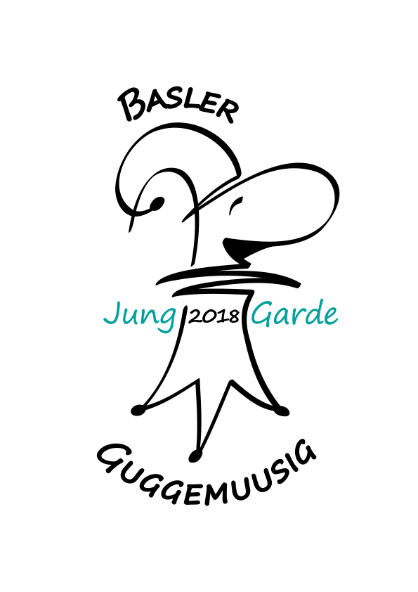

<mat-toolbar color="primary" class="header-toolbar">
  <div class="logo-container">
    
  </div>
  <span class="spacer"></span>
  <div class="nav-links">
    <a mat-button routerLink="/startseite">Startseite</a>
    <a mat-button routerLink="/kalender">Termine & Social Media</a>
    <a mat-button routerLink="/galerie">Galerie</a>
    <a mat-button routerLink="/ueber-uns">Über uns</a>
  </div>
</mat-toolbar>

<div class="bg-image">
  <router-outlet></router-outlet>
</div>

<footer class="footer">
  <div class="footer-content">
    <p>&copy; Basler Guggemuusig Jung Garde 2018 | <a routerLink="/impressum">Impressum</a></p>
  </div>
</footer>
